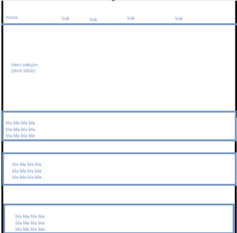

Jeg begynte med denne skissen, der planen var å ha en toolbar på toppen, en stor hero seksjon, og informasjon som du må skrolle ned for å lese. Jeg bestemte meg seinere for å gjøre at du må skrolle mindre med å gjøre at 2 seksjoner er med siden av hverandre. Dette gjorde jeg fordi det at du må skrolle mye er veldig unøvendig.